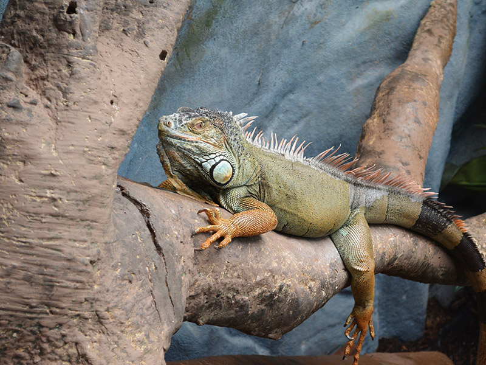

Services

Here at Basil's Rescue, we offer a range of exotic animal and reptile visits to customers throughout Berkshire and the surrounding areas.
We can cater for any type of event from school visits to private events and much more. From hour sessions to full day workshops, we educate both children and adults about
exotic animals and reptiles. All reptile visits are hosted by our trained animal and reptile handlers, so you’ll be in safe hand when you choose Basil's Rescue. Be sure
to get in touch today and one of our team will be more than happy to assist with your enquiry.
All of our animal visits and handling sessions are hosted by trained and experienced handlers. They are trained to make the visits both education and fun, ensuring both adults and children will enjoy the exotic animal and reptile visit experience. Having worked throughout Berkshire and the surrounding areas for many years, we have developed a well-known reputation for the visits that we offer. We have 5million liability insurance, so you’ll be in safe hands when you visit us.
All of our animal visits and handling sessions are hosted by trained and experienced handlers. They are trained to make the visits both education and fun, ensuring both adults and children will enjoy the exotic animal and reptile visit experience. Having worked throughout Berkshire and the surrounding areas for many years, we have developed a well-known reputation for the visits that we offer. We have 5million liability insurance, so you’ll be in safe hands when you visit us.
Exotic Animal Visit Services

We are able to offer a range of reptile and animal services to customers throughout Berkshire and the surrounding areas. No matter how many people
are attending our feeding and handling sessions are great fun for all ages. Some of the events we can cater for include:
We can cater for any type of event, no matter how big or small it might be. An animal and reptile visits from Basil's Rescue is sure to be an experience to remember. For more information on our animal and reptile visits or to arrange one, be sure to get in touch and one of the Basil's Rescue team will be happy to help.
- Birthday Parties – Suitable for everyone aged 3 and up
- School Visits – These are both fun and educational
- Therapy Sessions – To help people with phobias, dementia, special needs etc
- Clubs, After School, Scouts, Guides etc – These are both fun and educational
- Corporate Events – Great for team building, staff parties, family fun days
- Media – Our animals can be used in TV, Film or for other media purposes
- Weddings, Christenings etc – We can cater for any type of private occasion
We can cater for any type of event, no matter how big or small it might be. An animal and reptile visits from Basil's Rescue is sure to be an experience to remember. For more information on our animal and reptile visits or to arrange one, be sure to get in touch and one of the Basil's Rescue team will be happy to help.